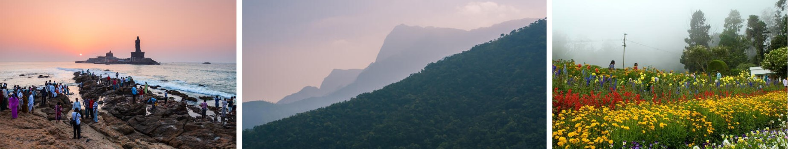

Tamil Nadu, or land of the Tamils, is the fourth largest state of India and is located in the extreme south of the Indian subcontinent. It is bounded by the Indian Ocean to the east and south, and by the states of Kerala to the west, Karnataka to the northwest, and Andhra Pradesh to the north.
gallery
